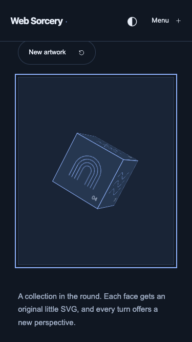
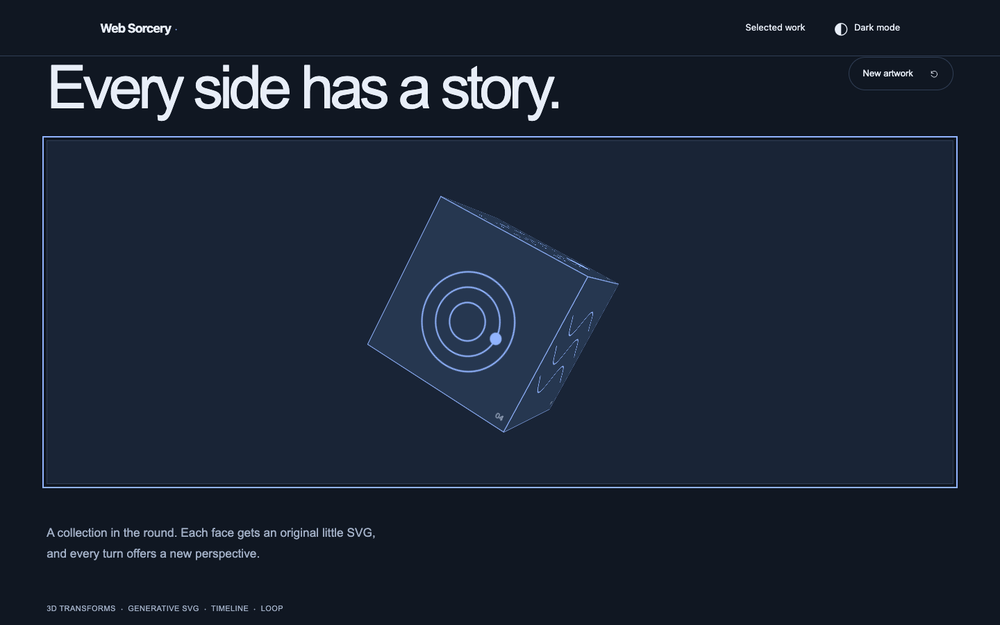
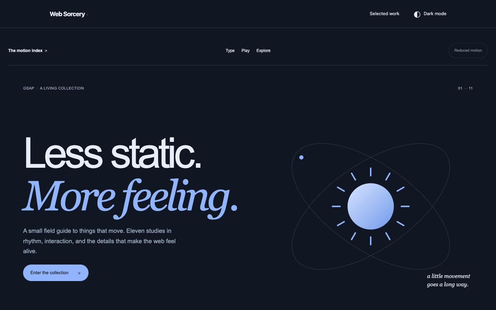

Apply your recommendations to improve site performance. Current functionality should stay as it is now.
Optimize the existing showcase without changing its scenes, artwork, interaction controls or timing. Concentrate on per-event allocation, canvas calculation and initialization lifecycle.
{
"brief": "Apply your recommendations to improve site performance. Current functionality should stay as it is now.",
"source": "src/scripts/modules/gsap-showcase.js",
"type": "JavaScript ES module",
"bytesBefore": 41602,
"bytesAfter": 43706,
"technology": "Existing GSAP 3.15.0 and plugins",
"assumptions": [
"Preserve scenes, artwork, timing, controls and reduced motion.",
"Preserve eager plugin loading and pause/reset behavior.",
"Measure regression behavior and allocation retention; do not claim field performance improvements."
]
}
The existing ES module, GSAP contexts, media queries and eleven scene initializers are retained. Pointer animations reuse quickTo tweens or direct setters; canvas connections use squared distances and persistent points. Script requests share pending promises. Failed setup reverts partial work; teardown is idempotent. Existing scene timelines, plugin availability, responsive behavior, offscreen pausing and reduced motion remain. The integrated page is gsap-animations.html; index.html in this folder links to it. Existing initShowcase(root) returns teardown asynchronously; a second mount API is not introduced.
const libraryLoads = new Map();
function loadScript(root, libraryName) {
if (window[libraryName]) return Promise.resolve(window[libraryName]);
if (libraryLoads.has(libraryName)) return libraryLoads.get(libraryName);
const request = new Promise((resolve, reject) => {
const script = document.createElement("script");
script.src = `${GSAP_CDN_URL}${libraryName}.min.js`;
script.async = true;
script.onload = () => {
script.onload = script.onerror = null;
if (window[libraryName]) resolve(window[libraryName]);
else reject(new Error(`${libraryName} unavailable`));
};
script.onerror = () => {
script.onload = script.onerror = null;
script.remove();
reject(new Error(`${libraryName} could not load`));
};
document.head.append(script);
});
libraryLoads.set(libraryName, request);
request.catch(() => libraryLoads.delete(libraryName));
return request;
}
const cursor = select(".motion-image-cursor");
const cursorX = gsap.quickTo(cursor, "x", { duration: 0.2 });
const cursorY = gsap.quickTo(cursor, "y", { duration: 0.2 });
const cursorOpacity = gsap.quickTo(cursor, "opacity", { duration: 0.2 });
const artworkX = gsap.quickTo(artwork, "x", { duration: 0.5 });
const artworkY = gsap.quickTo(artwork, "y", { duration: 0.5 });
on(frame, "pointermove", (event) => {
const bounds = frame.getBoundingClientRect();
const width = frame.clientWidth;
const height = frame.clientHeight;
if (!bounds.width || !bounds.height || !width || !height) return;
// Read geometry before writing transforms, preserving the scaled-frame mapping.
const x = ((event.clientX - bounds.left) * width) / bounds.width;
const y = ((event.clientY - bounds.top) * height) / bounds.height;
cursorX(x - 40);
cursorY(y - 40);
cursorOpacity(1);
artworkX((x / width - 0.5) * 14);
artworkY((y / height - 0.5) * 10);
});
on(frame, "pointerleave", () => {
cursorOpacity(0);
artworkX(0);
artworkY(0);
});
}
drawingContext.globalAlpha = 0.18;
for (let i = 0; i < points.length; i++) {
for (let j = i + 1; j < points.length; j++) {
const dx = points[i].x - points[j].x;
const dy = points[i].y - points[j].y;
if (dx * dx + dy * dy > 85 * 85) {
continue;
}
drawingContext.beginPath();
drawingContext.moveTo(points[i].x, points[i].y);
drawingContext.lineTo(points[j].x, points[j].y);
drawingContext.stroke();
}
}
let destroyed = false;
const onPageHide = (event) => {
if (!event.persisted) teardown();
};
// Revert only this studio's contexts; never kill another page's ScrollTriggers.
const teardown = () => {
if (destroyed) return;
destroyed = true;
window.removeEventListener("pagehide", onPageHide);
mediaContext.revert();
motionToggle.removeEventListener("click", toggleMotion);
root.dataset.initialized = "";
};
window.addEventListener("pagehide", onPageHide);
return teardown;
}
npm run dev npm run build # Or serve the existing generated page: python3 -m http.server 8080 # http://localhost:8080/gsap-animations.html
CUBE_CONFIG.dragDegreesPerPixel=0.5 and keyboardStep=15 remain unchanged. Particle counts remain 60 desktop / 34 mobile, with 85px connection distance. Existing durations and breakpoints remain unchanged. See README.md for lifecycle and verification commands.
Production Vite build and JavaScript syntax check passed. Browser checks passed at 375×667, 768×1024 and 1440×900 for cube dragging, orientation retention and keyboard input. Reduced motion stayed static. Carousel, accordion, modal, Flip, pause/resume and repeated teardown passed. After 1,000 updates on both magnetic and image pointer targets, context entries stayed at 181 instead of accumulating. Browser console errors and warnings: zero.



Eager plugin loading, responsive remounts, pause/reset semantics and layout-driven effects are intentionally preserved. The separate Soldier overlay is removed in the pointer fixture. Physical touch hardware, older-browser testing, field Web Vitals, low-end-device FPS and actual transfer timings were not measured. The context-entry check validates retained allocation behavior rather than a numeric speedup. The production entry was rebuilt and the generated page updated.